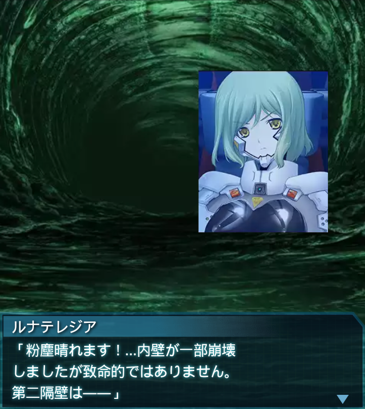

中国・H-01A主広間
ファーレンホルスト中尉
「第一隔壁は既に破壊済み、現在
第二隔壁の破壊準備をしています」
『誰』
「その先にあるあ号標的ブロック
から、『下』のあ号標的ブロックに
向かおうって事ですね？」
ファーレンホルスト中尉
「そうです。しかし言う程簡単な事
ではありません。隔壁の固さが想定
以上なのです」
ファーレンホルスト中尉
「世界融合の影響で、隔壁を保護
するかのように内壁が覆っている
等の障害にも見舞われています」
ファーレンホルスト中尉
「その為、第一隔壁の破壊に、
相当数のＳ－１１を使用してしまい
ました」
ファーレンホルスト中尉
「これは第二隔壁にも当てはまる
でしょう。一方で、迂闊に爆破すれ
ば横坑崩落の危険があります」
ファーレンホルスト中尉
「慎重にならざるを得ない状況が
続いており、なかなか目処が
立ちません…」
『誰』
「崩落か…。融合したハイヴには、
確かにその危険性があるからな。
だが時間がかかるという事は…」
イルフリーデ
「――偽装横坑よりＢＥＴＡ出現！
こ、この数…」
『誰』
「――むっ！？こっちにも…。
第二隔壁方面からＢＥＴＡが
近づいて来ている！」
ファーレンホルスト中尉
「こちらは我々だけで対処可能
です！貴隊には第一隔壁へと近づく
ＢＥＴＡの対処をお願いします」
『誰』
「了解ッ！
全機、ＢＥＴＡを迎え撃つ！
突っ込むぞ、付いて来い！！」
ファーレンホルスト中尉
「全機、第一隔壁の外まで後退！
これよりＳ－１１を起爆します」
『誰』
「全機、物陰に隠れろ！ＢＥＴＡの
死骸もシェルター代わりになる。
崩落にはくれぐれも用心しろ！」
ズンッ！！！！！
『誰』
「…隔壁はどうなった！？
崩落はしていないか！？」

ルナテレジア
「粉塵晴れます！…内壁が一部崩壊
しましたが致命的ではありません。
第二隔壁は――」
ルナテレジア
「第二隔壁は健在！
駄目です、破壊失敗ですわっ！」
ファーレンホルスト中尉
「至急原因を調査してください。
隔壁の構造再計算と横坑の強度
計算も急ぐのです」
ルナテレジア
「中尉…横坑中央部に極端に強度の
弱い箇所が…。次の爆発には耐え
られませんわ」
『誰』
「…確かに。これが崩れたら、退路
が断たれるとかいうレベルの話じゃ
済まないな…完全に生き埋めだ」

ファーレンホルスト中尉
「…わかりました。ですが隔壁の
構造再計算は続けます。
何か手がある筈です」
『誰』
「………………」